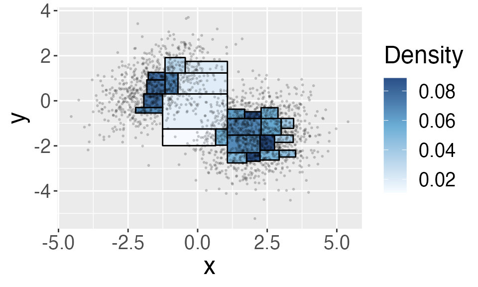

Creating a Beta Tree Histogram
beta_trees.RmdFirst introduced by Pearson in 1895, a histogram is one of the basic tools researchers use to summarize continuous data. To create a histogram for 1-dim data, one first define a set of “bins” (i.e., intervals), and then count the number of observations within each bin. We can do the same for two- or higher- dimensional data. However, as the number dimension increases, creating a histogram becomes challenging because of the curse of dimensionality. In essence, if we use the same number of bins in each dimension, the number of bins required to fill the whole space increases exponentially with the dimension, and yet most of these bins will be empty.
The Beta trees histogram circumvents the curse of dimensionality by adapting the histogram to where the data locates. Instead of predefining locations of bins, Beta trees histogram iteratively partitions the space according to the order statistics. The Beta trees histogram has three properties:
Adapts to where observations are located
Provides simultaneous confidence intervals of the probability mass in each region of the histogram
Summarizes data succinctly by choosing the largest region such that data is close to uniformly distributed inside.
The confidence intervals (CI) created by Beta trees histogram also allows us to identify modes in the underlying density, which we describe in another note “Identifying modes using a Beta Tree histogram”.
This document demonstrates how to use functions in the package to create a Beta-Tree histogram through an example of a mixture of 2-dimensional Gaussian distribution.
Example: Creating a beta-tree histogram for 2-dim Gaussian
As an illustration, we create a Beta Tree histogram for a mixture of two-dimensional Gaussian data (\(n =\) 2000) sampled from the following distribution and visualized below:
\[ \frac{2}{5} N\left(\left(\begin{matrix}-1.5 \\0.6\end{matrix}\right),\left(\begin{matrix}1 & 0.5 \\ 0.5 & 1\end{matrix}\right) \right) + \frac{3}{5} N\left(\left(\begin{matrix}2 \\-1.5\end{matrix}\right),\left(\begin{matrix}1 & 0 \\ 0 & 1\end{matrix}\right) \right), \]

We can use the BuildHist() function to create a Beta
Tree histogram. (If plot = T, then the function plots the
Beta-tree histogram if the data is two-dimensional. )
hist <- BuildHist(X, alpha = 0.1, method = "weighted_bonferroni", plot = T)
Besides the data matrix X, we input two parameters: one
minus confidence level alpha = 0.1 and a multiple testing
correction method method = "weighted_bonferroni". This
means that the confidence interval the histogram provides is
simultaneously valid for every region at confidence level
1-alpha = 0.9. The return value of the
BuildHist is a matrix describing each region in the
beta-tree histogram. Each row represents one region, and this histogram
includes 25 regions. Let’s look at the first region in the
histogram:
hist[1,]
#> [1] -2.34922539 -0.86472897 -0.78330297 -0.34938179 0.01982667 0.01011008
#> [7] 0.03366780 31.00000000 6.00000000The columns provide the following information:
the first two columns are the lower bounds in \(x\) and \(y\)-coordinates of each region; the next two columns are the upper bounds in \(x\) and \(y\)-coordinates of each region, i.e., this rectangle is defined by the bounds [ -2.35 -0.78 ] *[ -0.86 -0.35 ].
the fifth column stores the empirical density in this region
the sixth and seventh columns store the lower and upper confidence bound (CI) of the average probability density in the region. With probability at least \((1-\alpha)\), the CI covers the average density in all of the regions.
the eighth column stores the number of observations in this region
the last column stores the depth of the region in the k-d tree, which we will describe in the next section.
The histogram above does not have a rectangular boundary. As we will
explain in the next few sections, this is because the histogram only
includes bounded regions. Alternatively, you can
initialize a bounded rectangular region if you specify
bounded = T. You will then need to provide two additional
parameters option and ndat (which we will
explain in the next section). Below, we initialize the bounded rectangle
at the 0.05 and 0.95 quantiles in each dimension.
hist <- BuildHist(X, alpha = 0.1, method = "weighted_bonferroni", bounded = T,
option = "qt", q=c(0.05,0.05),
plot = TRUE)
In the next section, we will describe how the Beta tree histogram is constructed.
How a beta-tree histogram is constructed
The Beta tree histogram is constructed in four steps:
- Building a k-d tree.
- Calculating confidence levels for every region.
- Setting confidence bounds.
- Select regions that pass a goodness-of-fit test.
You can think of the algorithm as taking two passes: a top-down pass partitioning the sample space into small regions and a bottom-up pass selecting largest regions in which the observations are approximately uniform.
Building a k-d tree
Beta trees histogram starts by iteratively partitioning the sample space along the sample median. This is motivated by k-d trees, which is a spatial-partitioning data structure for organizing observations in a k-dimensional space.
In detail, we start with all of the observations (this is the root node). At each step, we choose (1) an axis along which to partition (2) a location for partitioning. For (1), we iterate through all of the coordinates, i.e., the first partition is along \(x\)-axis and the second partition is along the \(y\)-axis etc. As to (2), we partition along the sample median in the partitioning coordinate.
In the two-dimensional example above, in the first partition, we split the sample space into two half-spaces: \[ R_1 = \{x\in\mathbb{R}^2:x_1<X_{1,\lceil{n/2}\rceil} \}, \quad R_2 = \{x\in\mathbb{R}^2:x_1>X_{1,\lceil{n/2}\rceil} \} \] Note that the obs. at the sample median is not included in the two regions. In the second step, we split \(R_1\) and \(R_2\) repsectively. \(R_1\) is splitted into two children \[ R_1 = \{x\in R_1:x_2<X^1_{2,\lceil{n_1/2}\rceil} \}, \quad R_2 = \{x\in R_1:x_2>X^1_{2,\lceil{n_1/2}\rceil} \}, \] where \(X^1_{2,\lceil{n_1/2}\rceil}\) is the \(\lceil{n_1/2}\rceil\) order statistics in the \(y\)-coordinate for the observations \(X^1\) in \(R_1\) (the total num. of obs. in \(R_1\) is \(n_1\)). We continue splitting a region until the number of observations inside is less than \(4\log n\), where \(n\) is the total num of obs.
The function BuildKDTree constructs a k-d tree.
tree <- BuildKDTree(X, bounded = F)The tree object has two components: kdtree
and nd. The object kdtree stores the root node
of k-d tree as a list (you can refer to the function documentation for
more detail). We point out here that leftchild and
rightchild points to the two partitions of that region,
low ad up are the lower and upper bounds of
the region and ndat is the number of obs.. The following is
one node in the tree.
tree$kdtree$leftchild$leftchild$rightchild$rightchild$leftchild$leftchild
#> $leftchild
#> NULL
#>
#> $rightchild
#> NULL
#>
#> $ndat
#> [1] 30
#>
#> $depth
#> [1] 6
#>
#> $low
#> [1] -0.783303 -1.331250
#>
#> $up
#> [1] 0.4849015 -0.3761551
#>
#> $lower
#> NULL
#>
#> $upper
#> NULL
#>
#> $bounded
#> [1] 1
#>
#> $leaf
#> [1] TRUEnd contains the number of bounded regions at
each depth of the tree (the root node has depth = 0). This is useful
when we adjust the confidence levels at each depth to account for
multiple CI. Here, at depth 4 there are 4 bounded regions.
tree$nd
#> [1] 0 0 0 0 4 12 36 21As you can see, there are no bounded regions in the first 4 levels.
You can initialize a bounded region by the option
bounded = T . The function then constructs the first two
partitions to initialize a bounded region. We provide two options to
specify the bounded region:
- if
option = 'qt', then we set the bounds at the sample quantiles. For example, ifq = c(0.05, 0.05), then we first define a region \(R_0\)
\[ R_0 = \{x\in\mathbb{R}^2:X_{1,\lceil{0.05 * n}\rceil}< x_1 < X_{1,n - \lceil{0.05 * n}\rceil + 1} \}, \] and then a region \(R_1\)
\[ R_1 = \{x\in R_0:X^0_{2,\lceil{0.05 * n_0}\rceil} < x_2 < X^0_{2,n_0 - \lceil{0.05 * n_0}\rceil + 1} \}, \] where \(X^0\) are all the obs. inside \(R_0\). The root node contains all of the observations inside \(R_1\).
- if
option = 'ndat', then we set the bounds at order statistics. For example, ifq = c(25, 25), then we first define a region \(R_0\)
\[ R_0 = \{x\in\mathbb{R}^2:X_{1,25}< x_1 < X_{1,n - 25 + 1} \}, \] and then a region \(R_1\)
\[ R_1 = \{x\in R_0:X^0_{2,25 } < x_2 < X^0_{2,n_0 - 25 + 1} \}, \] where \(X^0\) are all the obs. inside \(R_0\). The root node contains all of the observations inside \(R_1\).
Calculating confidence levels for every region
We are able to use the construct CI for the probability density in region because the cdf in a region \(R_k\) satisfies
\[ F(R_k)\sim \mathrm{Beta}(n_k+1, n-n_k), \] where \(n_k\) is the num of obs in \(R_k\) and \(n\) is the total num of obs. With this result, we can construct a \((1-\alpha)\) confidence interval for the average density \(f(R_k) = F(R_k)/|R_k|\) (\(|R_k|\) is the volume of \(R_k\)):
\[ C_k(\alpha) = \left(qBeta(\frac{\alpha}{2},n_k+1, n-n_k), qBeta(1-\frac{\alpha}{2},n_k+1, n-n_k)\right). \]
This confidence interval is valid for only the region \(R_k\). If we want to simultaneously cover all the regions at level \((1-\alpha)\), we can redefine the significance level for each region such that the total probability of mis-coverage is at most \(\alpha\). For example, we can use a weighted bonferroni adjustment, which assigns the same level for every region in the same tree depth. The significance level for regions at tree depth \(D\) is defined as \(\alpha_D\),
\[ \hat{\alpha}_D = \frac{\alpha}{N_D (D_{\max} - D + 2) \sum_{B=2}^{D_{\max}-D_{\min}+2}\frac{1}{B}},\quad D\geq D_\min \]
Here, \(D_{\max}\) is the maximum depth of the k-d tree, \(D_{\min}\) is the minimum depth where there are bounded regions, \(N_D\) is the number of bounded regions in depth \(D\) and the factor \(\sum_{B=2}^{D_{\max}-D_{\min} + 1}\frac{1}{B}\) ensures that \(\hat{\alpha}_D\) adds up to \(\alpha\).
The function ConfLevel computes \(\hat{\alpha}_D\) at each level. For
example, the following code computes \(\hat{\alpha}_D\) when \(\alpha = 0.1\). You can also use bonferroni
adjustment by setting method = 'bonferroni'. The Bonferroni
adjustment gives equal weight to regions at the same tree depth.
ahat <- ConfLevel(tree$nd, alpha = 0.01, method = "weighted_bonferroni")
ahat
#> [1] 0.000000e+00 0.000000e+00 0.000000e+00 0.000000e+00 3.896104e-04
#> [6] 1.623377e-04 7.215007e-05 1.855288e-04Setting confidence bounds
Once we define the confidence levels, we compute simultaneous confidence intervals for the average density \(f(R_k)\) as
\[ \left(\frac{\mathrm{qBeta}(\hat{\alpha}_D, n_k + 1, n-n_k)}{|R_k|}, \frac{\mathrm{qBeta}(1 - \hat{\alpha}_D, n_k + 1, n-n_k)}{|R_k|}\right). \]
To form the Beta Tree histogram, we will use a bottom-up pass to
select the largest regions that we are confident that the obs. inside
are from a uniform distribution. In other words, we pick the largest
\(R_k\) whose empirical density \(h_k = (n_k + 1)/n\) falls within the CI of
all of its children. To simplify computation, we set the lower and upper
confidence bound of each node in the k-d tree tree (in the
lower and upper ) as the intersection of the
CI with that of all of its descendants
\[ \mathrm{lower}(R_k) = \max\left(\frac{\mathrm{qBeta}(\hat{\alpha}_D, n_k + 1, n-n_k)}{|R_k|}, \mathrm{lower}(\text{1st child}), \mathrm{lower}(\text{2nd child})\right)\\ \mathrm{upper}(R_k) = \max\left(\frac{\mathrm{qBeta}(1-\hat{\alpha}_D, n_k + 1, n-n_k)}{|R_k|}, \mathrm{upper}(\text{1st child}), \mathrm{upper}(\text{2nd child})\right) \]
The function SetBounds sets these two bounds. Let’s
compare the same node in the k-d tree as before, whereas the
lower and upper levels were empty before, the
two values are not filled in.
tree <- SetBounds(tree$kdtree, ahat, n)
tree$leftchild$leftchild$rightchild$rightchild$leftchild$leftchild
#> $leftchild
#> NULL
#>
#> $rightchild
#> NULL
#>
#> $ndat
#> [1] 30
#>
#> $depth
#> [1] 6
#>
#> $low
#> [1] -0.783303 -1.331250
#>
#> $up
#> [1] 0.4849015 -0.3761551
#>
#> $lower
#> [1] 0.005640778
#>
#> $upper
#> [1] 0.0238393
#>
#> $bounded
#> [1] 1
#>
#> $leaf
#> [1] TRUESelecting regions to form the Beta tree histogram
The function SelectNodes selects the largest regions
(w.r.t) inclusion such that the empirical density \(h_k\) falls inside the interval \([\mathrm{lower}(R_k),
\mathrm{upper}(R_k)]\).
B <- matrix(nrow = 0, ncol = (2*d + 5))
hist <- SelectNodes(tree, B, ahat, n)Each row in hist matrix represents one region in the
Beta Tree histogram. The matrix contains \(2\times d + 5\) columns. The first \(2\times d\) columns stores the lower (first
\(d\) columns) and upper bounds of the
region. The \((2d+1)\) column stores
the empirical density \(h_k\) and the
next two columns store the confidence interval of \(f(R_k)\) as defined in the previous
section: \[
\left(\frac{\mathrm{qBeta}(\hat{\alpha}_D, n_k + 1, n-n_k)}{|R_k|},
\frac{\mathrm{qBeta}(1 - \hat{\alpha}_D, n_k + 1, n-n_k)}{|R_k|}\right).
\]
The last two columns stores the number of obs. inside the region and
its tree depth. hist is what BuildHist
function returns.